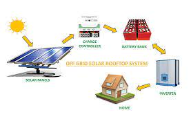
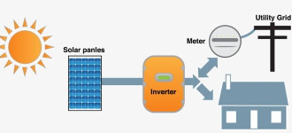
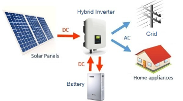
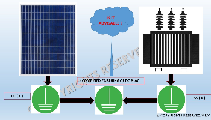

Off GRID
An off-grid solar energy system is not connected to the utility grid.
You will only have electricity at two points:
1)When the sun is shining and your solar system is producing electricity.
2)When you’re pulling electricity previously generated by your solar system from a solar storage device,
like batteries.
What Happens to Excess Production..
Most off-grid solar systems are designed to produce a certain amount of “extra” electricity in the daytime, which is sent to batteries for storage. The energy stored in those batteries can then be accessed when the system is not producing, like at night or during cloudy weather.
Depending on your energy goals, systems can be sized to produce enough excess electricity in the daytime to cover your entire energy usage around the clock.
However, despite even the best and most accurate estimates, the weather is unpredictable. If you experience abnormally cloudy weather several days in a row, your system may not be able to produce enough electricity to charge the batteries and fulfill all your needs.
While having extra batteries offers peace of mind and can provide a bank of stored electricity just in case this happens, they’re also expensive. Purchasing more batteries than you need may be cost-prohibitive, depending on your budget.

On GRID
If you decide to install an on-grid solar system, you will always have access to electricity (unless the
grid goes down), whether or not your solar system is producing or if you have batteries.
If your system is not producing any electricity or not producing enough electricity to power the
devices, lights, machines, etc. that you’re using, you can pull energy from the utility grid to
supplement it. This ensures you always have enough electricity for what you need.
What happens to Excess Production
Just like off-grid solar systems, many who choose to install an on-grid solar system want to cover 100% or nearly 100% of their energy usage. This can be achieved with on-grid systems as well.
Depending on the time of day you use electricity, your solar system can produce excess energy.
Instead of sending it to batteries as you would in an off-grid system, you can send it to the grid and you will be compensated for that electricity.

HYBRID
Hybrid solar systems generate power in the same way as a common grid-tie solar system but use special hybrid inverters and batteries to store energy for later use. This ability to store energy enables most hybrid systems to also operate as a backup power supply during a blackout, similar to a UPS system.
Traditionally the term hybrid referred to two generation sources such as wind and solar, but in the solar world, the term 'hybrid' refers to a system which uses a combination of solar and batteries that can interact with the electricity grid.
Hybrid solar systems enable you to store solar energy and use it when you're home during the evening when the cost of electricity is typically at the peak rate.
.jpg)
Net Metering
Net metering is a billing mechanism that credits solar energy system owners for the electricity they add to the grid.
For example, if a residential customer has a PV system on their roof, it may generate more electricity than the home uses during daylight hours.
The greatest benefit of net metering to solar homeowners are the utility bill savings. Net metering can result in tens of thousands of dollars in savings over the lifetime of your solar panel system.
2)Net metering is the best solar policy, since it allows you to store every unit of energy you produce with solar to be used at a later date from the grid.

AC & DC Earthing
f a circuit is grounded through a capacitor it is referred to as AC-grounded because only AC signals can pass through the cap to ground, DC levels are blocked. Whereas if a circuit is such that DC current can flow to ground, such as through a resistor, then it is considered to be DC-grounded.
It is typically for safety and shielding. The AC ground (green) connection would be tied to earth ground, or chassis ground as its often called. The Ov or negative of the DC can be tied to chassis ground, but not always, depending on the system

Services
Ionic Engineering Services Mansehra provides the best Solar solution for your Homes, business Centres, markets, Hospitals and Farm-Houses to generate Green Energy with the Help of the Solar System. That makes your Electric Bill upto minimum and provides you 24/7 Free solar Energy.
Keep in-touch with us to get your Free Quotation Right Now.
Contact No:
0319-1980822
0319-1511991..